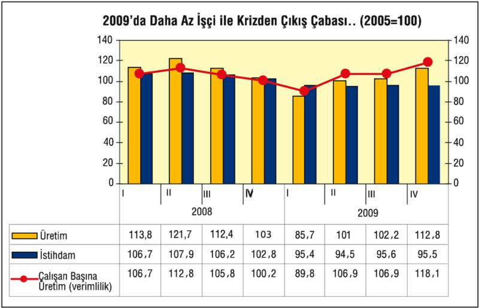
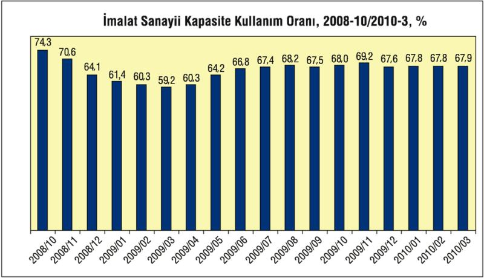

2009'un ikinci yarısından itibaren, işverenler, bir yandan çalışan sayısını bir yandan da ücretleri azaltarak maliyetleri düşürüyorlar; bu avantajla rekabet gücü edinip kaybettikleri pazarları, ciroları, dolayısıyla karları yeniden yakalama peşindeler.
TÜİK, 2005 yılı baz(=100) alındığında, üretimin 2008'e kadar yüzde 13 arttığını saptamıştı. Aynı dönemde imalat sanayinde çalışan sayısı, aynı oranda olmasa da, yüzde 6 artmıştı. 2009 krizinde, sanayi üretimi 2008'e göre yüzde 13'e yakın azaldı. Yani 2006'daki düzeyine geriledi. Sanayici işverenler, vakit kaybetmeden, iç ve dış talepte yaşanan daralmayı hemen istihdama, çalışanlara yansıttılar. Birincisi, çalışan sayısını azalttılar. İşten çıkarmalarla, imalat sanayiinin istihdam seviyesi, 2008'e göre yüzde 10 azaltıldı. İstihdam, 2005'teki düzeyinin bile yüzde 5 altına düştü.

Kriz öncesi 2008 ve kriz yılı 2009, mevsimler ya da çeyrekler itibariyle analiz edildiğinde, sanayi üretiminin 2008 son çeyreğinde düşmeye başladığı ve 2009 ilk çeyreğinde dibe vurduğu görülüyor. Bu sırada sanayici işverenlerin istihdamı hızla azalttıkları görülüyor.
2009'un ikinci çeyreğinden itibaren ise üretim görece toparlanmaya başladı ama bu, istihdam artırılarak, işten çıkarılanları yeniden işe alarak değil, tersine azaltılmış işçilerle yapıldı. 2009 son çeyreğinin görüntüsü şöyledir: İmalat sanayi üretimi, kriz öncesi düzeyi yeniden yakaladı, ancak bu üretimi, kriz öncesinin istihdamını yüzde 10 azaltarak yaptı. Yani kriz öncesinde 100 kişi ile yapılan üretimi, krizi fırsat bilerek 90 kişiyle yaptı. Bu, işte tutulan işçilerin daha uzun çalıştırılmaları, iş yüklerini artırmaları ile yapılır ve adına kapitalist işletmecilikte "verimlilik" denir. Yani, çalışan başına üretimi artırma... Nitekim işçi dışarı, üretim yukarı operasyonu ile "verimlilik", yani çalışan başına üretim, 2009'un ilk çeyreğinde yerlerde sürünürken ( 90) 2009 son çeyreğinde tarihi zirveye çıktı ve 2005'teki düzeyinin yüzde 18 (2005 bazına göre 118) üstüne çıktı. 2005'ten bu yana verimliliğin en çok arttığı çeyrek, yüzde 12 artış ile 2007'nin son çeyreği olmuştu.
Sanayici sermayedarları, krizden çıkma konusunda ümitlendiren bir unsur, daha az istihdam ile üretim artışına geçmek ise, diğeri de reel ücretlerin yerlerde sürünmesi, 3,5 milyon resmi işsiz ordusunun da çalışan sınıfı açlıkla terbiye etmesidir.
Hazine Müsteşarlığı verileri, 2009'da sanayide reel ücretlerin yüzde 9 gerilediğine işaret ediyor. Çalışanlar, belki de tarihlerinin en derin tehdidine maruz kaldılar; bir kısmı işten çıkarıldı, işini kaybetmeyenlere de zam yapılmadı ve ya yüzde 7'lik enflasyon zammı bile söz konusu olmadı. Daha da ileri gidip, "Kriz var, işinizi kaybetmek istemiyorsanız, ücretlerden fedakarlık yapacak, indirim operasyonlarımıza ses çıkarmayacaksınız" tehditi çok sık ve çok cüretkar bir biçimde kullanıldı.
Sanayi patronları, 2010'a, keyfi tensikatlarla çalışan sayısını azaltmış, reel ücretleri geriletmiş olmanın avantajıyla girdiler. 2009 son çeyreğini bu rüzgarla tamamlayanlar, 2010'da bu avantajlarla yeniden iç ve dış piyasada rekabet gücü bulmayı umuyorlar. 2010'da büyümenin yüzde 5'i bulacağı iddiası, bu emek karşıtı operasyonlara dayanıyor.
Ancak, bu işgücü kullanımını azaltıp ücretleri geriletme ile ayakta kalma, yeniden büyüme umudu, 2001 krizinde işe yaramış olmakla birlikte 2009 krizinde işe yaramayabilir. Nitekim, imalat sanayinde kapasite kullanımı ile ilgili veriler, beklenen toparlanmanın kolay olmadığını ortaya koyuyor.

Kaynak: TÜİK
Küresel krizin etkisi altına girilen 2008 Ekiminde yüzde 74,3'lük kapasite kullanımı, izleyen aylarda düştü ve 2009 Martında yüzde 59,2 ile dibe vurdu. İzleyen aylarda kapasite kullanımı arttı ve 2009 Kasımında yüzde 69,2'ye kadar çıktı ama süremedi, izleyen aylarda yine yüzde 68'in altına düştü.